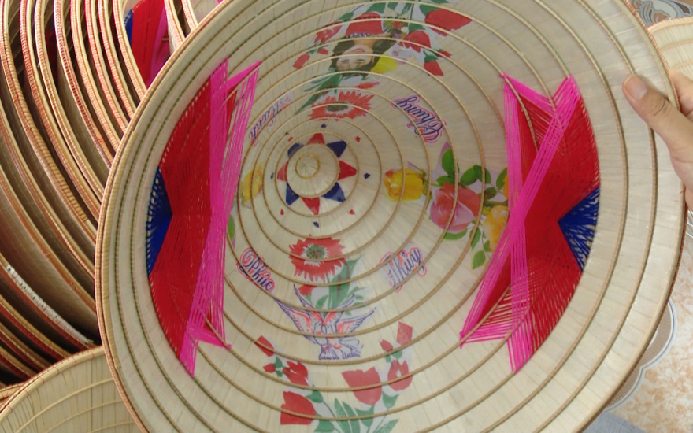
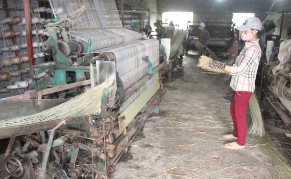
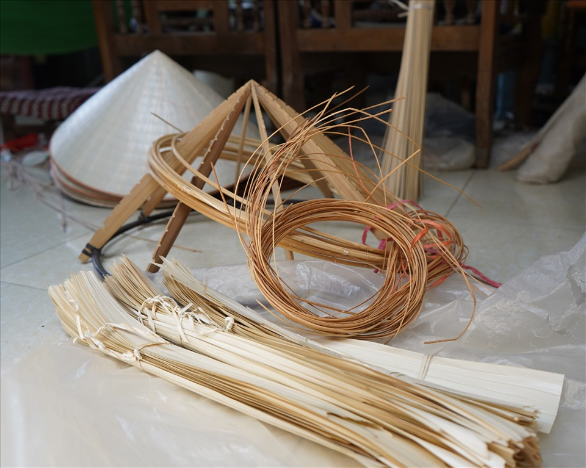
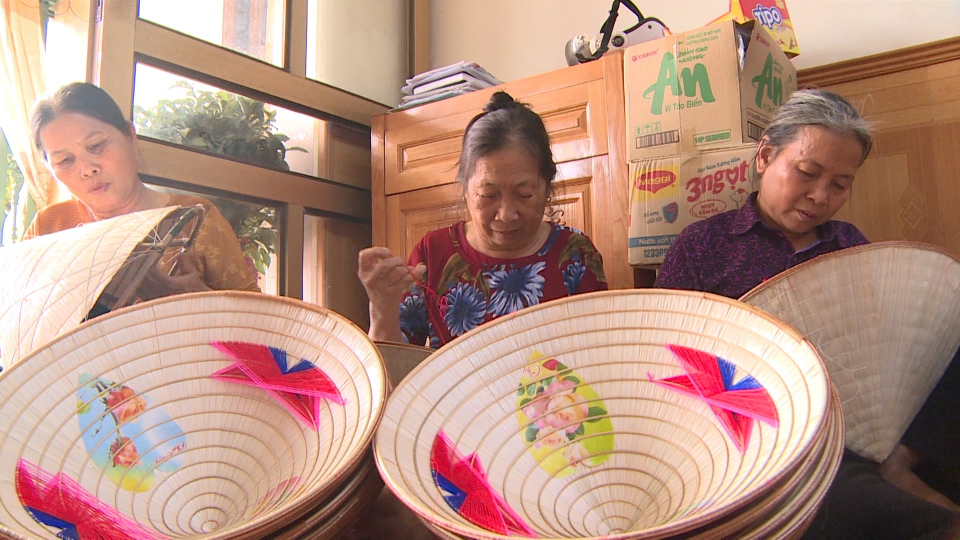
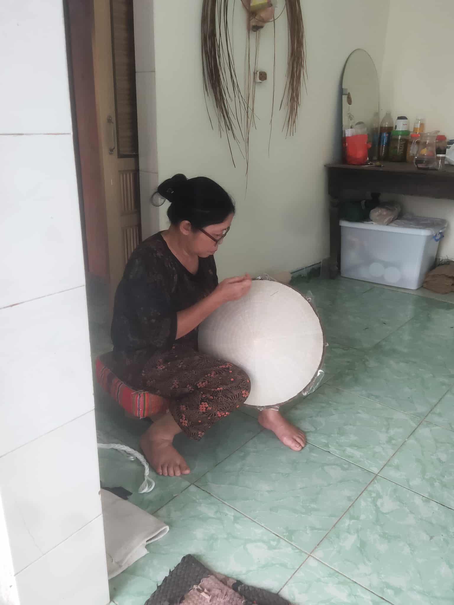
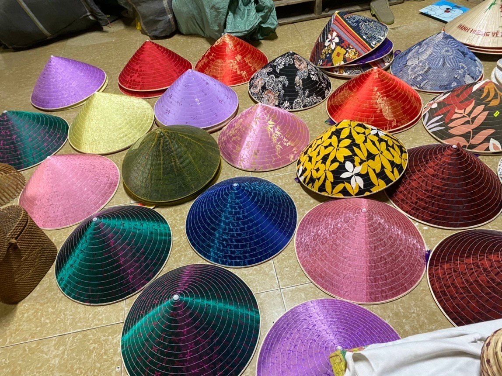
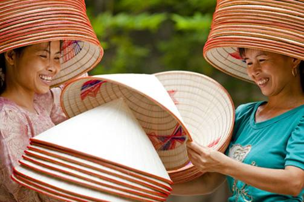

1. Sơ lược về nghề làm nón ở Hướng Tân
Thôn Hướng Tân, xã Nam Hà, huyện Tiền Hải từ lâu đã nổi tiếng với nghề làm nón lá truyền thống. Đây là một trong những làng nghề giữ được bản sắc văn hóa vùng đồng bằng Bắc Bộ, với những sản phẩm nón lá vừa mang tính thực dụng, vừa chứa đựng giá trị thẩm mỹ và tinh thần của người dân quê lúa Thái Bình. Người dân trong thôn vẫn truyền nhau câu nói rằng: “Nhắc đến Nam Hà là nhắc đến nón Hướng Tân” – như một niềm tự hào của cả vùng.
2. Nguyên liệu và công đoạn sản xuất
 Để làm ra một chiếc nón lá bền, đẹp, người thợ Hướng Tân phải trải qua nhiều công đoạn tỉ mỉ. Nguyên liệu chính là lá cọ, nứa, tre và chỉ.
Video phỏng vấn nghệ nhân về công đoạn làm nón của một học sinh THPT Nam Tiền Hải
Lá cọ được thu mua, phân loại rồi phơi nắng cho khô, sau đó là khâu khâu lá vào khung tre uốn sẵn. Từng đường kim mũi chỉ đều đòi hỏi sự khéo léo và chính xác để nón vừa chắc chắn vừa mềm mại. Người làm nghề ví mỗi chiếc nón là “đứa con tinh thần” bởi nó chứa đựng sự cần mẫn, chăm chút của đôi bàn tay lao động.
3. Đời sống người thợ và tổ chức sản xuất
 Ở Hướng Tân, làm nón không chỉ là kế sinh nhai mà còn là nét văn hóa gắn bó với đời sống thường nhật. Nhiều gia đình, từ người già đến phụ nữ trung niên đều tham gia vào các khâu khác nhau: chẻ tre, phơi lá, khâu nón. Công việc thường được tổ chức theo hộ gia đình, mang tính nhỏ lẻ, thủ công, nhưng nhờ thế mà sản phẩm giữ được sự tinh xảo, độc đáo không lẫn với nơi khác. Mỗi chiếc nón ra đời là kết quả của sự chung tay trong gia đình và cộng đồng.
4. Khó khăn – thách thức và đổi mới
Tuy nhiên, nghề làm nón Hướng Tân hiện cũng đứng trước không ít khó khăn. Thị trường tiêu thụ thu hẹp dần do sự phổ biến của các loại mũ hiện đại, giá nguyên liệu ngày càng tăng, trong khi thu nhập từ nghề chưa cao. Nhiều hộ làm nghề đã phải tìm hướng mới như kết hợp làm nón du lịch, nón lưu niệm hay tham gia trưng bày trong các hội chợ để quảng bá sản phẩm. Một số gia đình còn thử nghiệm trang trí nón với hoa văn, họa tiết nhằm tăng giá trị thẩm mỹ, tạo sức hút cho khách hàng.
5. Vai trò kinh tế – văn hóa – xã hội
Dù đối mặt với không ít thách thức, nghề làm nón vẫn đóng vai trò quan trọng trong đời sống xã hội của thôn Hướng Tân. Nó không chỉ giúp nhiều hộ dân có thêm thu nhập, cải thiện cuộc sống, mà còn góp phần bảo tồn nét văn hóa truyền thống của quê hương. Chiếc nón lá gắn với hình ảnh người phụ nữ Việt Nam dịu dàng, với cánh đồng lúa, giếng nước, sân đình – tất cả trở thành biểu tượng văn hóa bền bỉ được lưu truyền qua nhiều thế hệ.
6. Lời kết
Ngày nay, khi xã hội ngày càng phát triển, người dân Hướng Tân vẫn mong muốn giữ gìn và phát huy nghề làm nón truyền thống. Đó là niềm tự hào, là bản sắc riêng của quê hương Nam Hà, Tiền Hải. Đến với Thái Bình, du khách không chỉ được thưởng thức cảnh đẹp biển xanh, đồng lúa bát ngát, mà còn có thể ghé thăm làng nghề Hướng Tân để tận mắt chứng kiến quy trình làm nón, trải nghiệm sự tài hoa và mộc mạc của người thợ nơi đây.